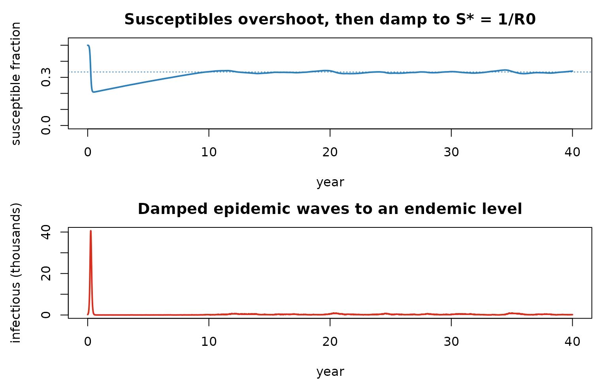
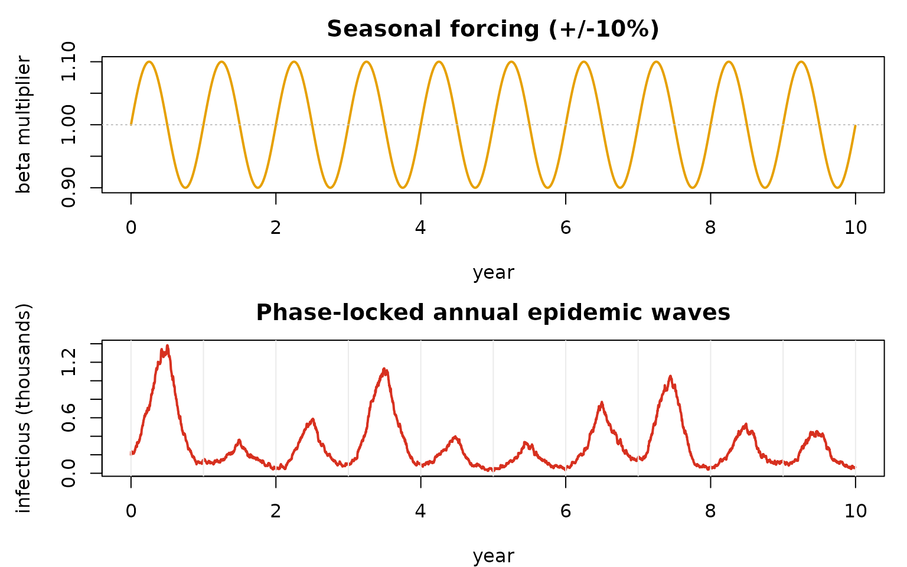

Endemic dynamics: vital turnover, importation, and seasonality
Source:vignettes/articles/endemic_dynamics.Rmd
endemic_dynamics.RmdCompanion to
examples/endemic_sir.Randexamples/endemic_sir_seasonal.R.
From a single epidemic to a persistent one
The final-size notebook showed a closed SIR burning through its susceptibles once and stopping. Real endemic diseases persist because the susceptible pool is continually replenished — by births, by loss of immunity, by migration. Add demographic turnover (birth/death rate ) to SIR and the system has a non-trivial endemic equilibrium:
The susceptible fraction settles at — the herd-immunity threshold — because that is exactly the level at which the effective reproduction number equals 1: each case replaces itself, no more. Push above and the epidemic grows; below, it shrinks. The approach to is a series of damped epidemic waves.
How Razer builds it
run_model() itself is closed-population
(it allocates exactly the initial agents). Vital dynamics and
importation are layered on through its callbacks and the
capacity argument:
-
capacityreserves agent slots above the initial count, soimport_infections()has somewhere to put newly-introduced cases (a closed run could not grow). - a
step_exitcallback runs each tick after transmission:constant_pop_vitals_sirapplies births = deaths (each death reborn susceptible, so is constant), thenimport_infectionsseeds a few cases on a schedule.
Why importation? A finite stochastic population can have its last infectious agent recover by chance — fade-out — below the critical community size. A trickle of imports keeps the chain alive so we observe the equilibrium rather than extinction.
First, factor the constant-population vitals + importation into a reusable pair of callbacks (we use it for both runs below). To watch the system approach the equilibrium rather than land on the answer, we then seed the population above — half susceptible, well above — and let it relax.
n_nodes <- 2L; pop <- 5e5L; R0 <- 3; cdr <- 20 # crude death rate (per 1,000/yr)
network <- matrix(c(0, 0.01, 0.01, 0), n_nodes, byrow = TRUE) # 1% cross-coupling
# init + step_exit for an endemic SIR: constant-population births = deaths (each death reborn
# susceptible, so N is constant) plus a fixed importation schedule that prevents fade-out.
endemic_callbacks <- function(nticks, sched) {
st <- as.integer(sched$tick); sn <- as.integer(sched$node); sc <- as.integer(sched$count)
list(
init = function(model) {
model$nodes$death_rate <- values_map(cdr / 1000 / 365, nticks, model$nodes$count)
model$nodes$births <- allocate_vector("i32", nticks - 1L, model$nodes$count)
model$nodes$deaths <- allocate_vector("i32", nticks - 1L, model$nodes$count)
model$nodes$importations <- allocate_vector("i32", nticks - 1L, model$nodes$count)
},
step_exit = function(model) {
constant_pop_vitals_sir(model$people$state, model$people$timer, model$people$nodeid,
model$people$count, model$nodes$death_rate, model$nodes$S, model$nodes$I,
model$nodes$R, model$nodes$births, model$nodes$deaths, model$tick)
model$people$count <- import_infections(model$people$state, model$people$timer,
model$people$nodeid, model$people$count, model$nodes$I, model$nodes$importations,
st, sn, sc, dist_gamma(2, 4), model$tick)
})
}
nticks <- 40L * 365L # long enough to settle
sched <- expand.grid(tick = seq(0L, nticks - 2L, 30L), node = 0:1); sched$count <- 5L
# Seed ABOVE the equilibrium: half the population susceptible (R = N/2 immune), so S0 = 0.5 > 1/R0.
scenario <- data.frame(population = rep(pop, n_nodes), I = rep(100L, n_nodes),
R = rep(round(0.5 * pop), n_nodes))
cb <- endemic_callbacks(nticks, sched)
m <- run_model(scenario, "SIR", nticks = nticks, beta = R0 / 8, infectious_period = dist_gamma(2, 4),
network = network, capacity = sum(scenario$population) + sum(sched$count),
seed = 1L, init = cb$init, step_exit = cb$step_exit)
yr <- (seq_len(nticks) - 1L) / 365
S <- rowSums(m$nodes$S$values()) / (n_nodes * pop) # susceptible FRACTION
I <- rowSums(m$nodes$I$values())
par(mfrow = c(2, 1), mar = c(4, 4.5, 2.5, 1))
plot(yr, S, type = "l", lwd = 2, col = "#2c7fb8", ylim = c(0, max(S) * 1.05),
xlab = "year", ylab = "susceptible fraction", main = "Susceptibles overshoot, then damp to S* = 1/R0")
abline(h = 1 / R0, lty = 3, col = "#2c7fb8") # the equilibrium S*/N = 1/R0
plot(yr, I / 1e3, type = "l", lwd = 2, col = "#d7301f",
xlab = "year", ylab = "infectious (thousands)", main = "Damped epidemic waves to an endemic level")
Starting at
,
the first epidemic overshoots — driving susceptibles well below
— then births refill the pool, a smaller epidemic fires, and the system
spirals in to
(dotted line) through damped waves, persisting at a low endemic level
instead of going extinct. (Seed it at
and the line is flat from tick 0 — the system is already at rest, which
is what endemic_sir.R does to study the equilibrium and its
seasonal response directly.)
Seasonal forcing: a small wobble, a big response
Make transmission seasonal by passing run_model a
time-varying seasonality multiplier (any
values_map-broadcastable shape). Because the endemic system
sits critically poised at
,
even a gentle annual sinusoid
(
on
)
drives pronounced, phase-locked annual epidemic waves —
a resonance phenomenon central to the dynamics of childhood infections
like measles. Here we seed at the equilibrium so the forced
waves stand out without a startup transient.
nticks <- 10L * 365L
sched <- expand.grid(tick = seq(0L, nticks - 2L, 30L), node = 0:1); sched$count <- 10L
scenario <- data.frame(population = rep(pop, n_nodes), I = rep(100L, n_nodes),
R = rep(pop - round(pop / R0), n_nodes)) # seed S = N/R0 (at equilibrium)
amp <- 0.10
seas <- 1 + amp * sin(2 * pi * (seq_len(nticks) - 1L) / 365) # length-nticks per-day multiplier
cb <- endemic_callbacks(nticks, sched)
ms <- run_model(scenario, "SIR", nticks = nticks, beta = R0 / 8, infectious_period = dist_gamma(2, 4),
network = network, seasonality = seas,
capacity = sum(scenario$population) + sum(sched$count),
seed = 1L, init = cb$init, step_exit = cb$step_exit)
yr <- (seq_len(nticks) - 1L) / 365
par(mfrow = c(2, 1), mar = c(4, 4.5, 2.5, 1))
plot(yr, seas, type = "l", lwd = 2, col = "#e6a000", xlab = "year", ylab = "beta multiplier",
main = sprintf("Seasonal forcing (+/-%.0f%%)", 100 * amp)); abline(h = 1, lty = 3, col = "grey")
plot(yr, rowSums(ms$nodes$I$values()) / 1e3, type = "l", lwd = 2, col = "#d7301f",
xlab = "year", ylab = "infectious (thousands)", main = "Phase-locked annual epidemic waves")
abline(v = 0:10, col = "grey92")
Customize and extend
-
Mortality / turnover. Raise
cdr(here 20/1000/yr) to replenish susceptibles faster — larger raises the endemic and shortens the inter-epidemic period. -
Importation. Edit the
scheddata frame (which ticks, which nodes, how many) — set it to zero and watch a small population fade out (cross the critical community size). -
Forcing. Change
amp, or replace the sinusoid with school-term square waves; try the that makes the inter-epidemic period resonate with the annual drive. -
Growing populations. For true births (population
growth, newborns into a maternal
Mstate) rather than constant-population turnover, seeexamples/engwal_measles.Rand the interventions notebook —run_model(extra_states = "M", capacity = …)plus thebirths/mortalitykernels. -
Space. Add patches to
scenarioand entries tonetworkto study spatial coupling, travelling waves, and metapopulation persistence.